169 W Green St, Old Pasadena · eleven directions, one bag
Eleven ways into the vitrine.
Each direction is a complete home page for the same shop. All eleven share one bag, the pickup slot picker, the box of six, the cake ladder, class seats, La Cave’s table entry, merchandise, gift cards and the Shopify hand-off, and all seven link to the same six inner pages. What changes is the argument: what the first screen sells, and how the page moves a phone customer from wanting to paying.
How to compare
Open each on your phone, add two items, pick a slot, build a box, reach checkout; count the taps.
- Add two items: 2 taps on every option.
- Pick a slot: 0 taps to keep the earliest slot, which every option preselects; 2 to choose another day and time (4 on Carte, whose picker opens from the Slot chip).
- Build a box of six: 2 taps with Surprise me and Add, or 7 choosing each flavour.
- Reach checkout: 1 tap to open the bag, 1 on Checkout. Scrolling isn’t counted, so note how far you travel too.
-
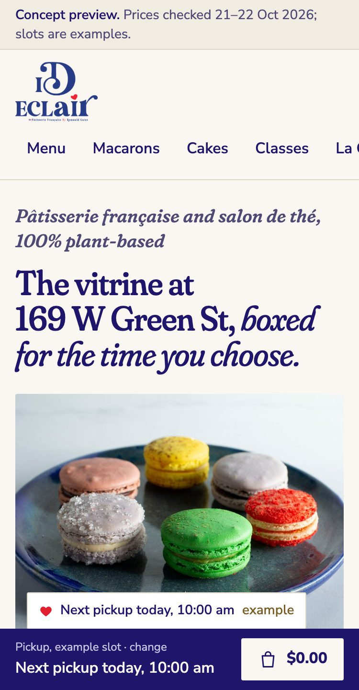
Direction 01
Vitrine
Vitrine gives the chef the breadth of his reference catalogue, made calm: the first screen indexes every line of business, then the whole case sits at its real prices on six shelves in one fixed square frame, with gilded vitrine price cards wherever a photo doesn’t exist yet. The pickup slot stays pinned beside the case on desktop and in a bottom order bar on phones, so the box of six, class seats, the cake ladder, La Cave, merch and gift cards all feed one bag and the Shopify hand-off.
Does best
- Breadth on the first screen: éclairs, viennoiserie, macarons, chocolate and gifts, cakes, the class, La Cave and the shop.
- The pickup slot never leaves view: a side panel on desktop, a bottom order bar on phones.
- Gilded price cards stand in for missing photos, so the case reads complete before the shoot.
- Gate
- PASS 11/11
- Taps
- 6, or 8 with your own slot
- Phone page
- 19,600 px
-
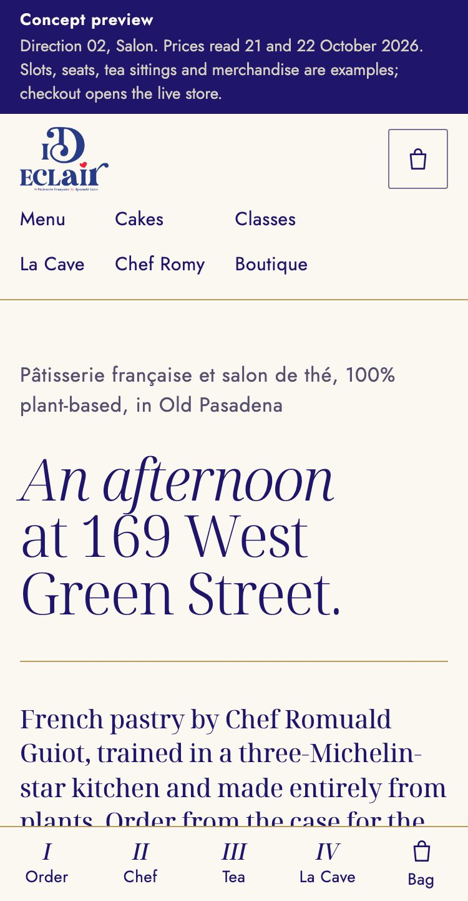
Direction 02
Salon
Salon tells iD Éclair as one afternoon at 169 West Green Street in four chapters (La vitrine, Le chef, La table sous les arbres, Le soir à côté), set at magazine sizes on ivory with one thin gold hairline as the only extra tone. Each chapter closes a sale where the story builds the appetite: the case with the box of six and the slot picker, the chef with the cake ladder and dated masterclass seats, the tea carte with a table request, and La Cave with its $100 board and a table form.
Does best
- Story and sale in one scroll: every chapter ends in something to buy.
- Afternoon tea gets its own carte and a table request.
- Restraint: one gold hairline, and one launch merch piece per chapter instead of a shop wall.
- Gate
- PASS 11/11
- Taps
- 6, or 8 with your own slot
- Phone page
- 24,400 px
-
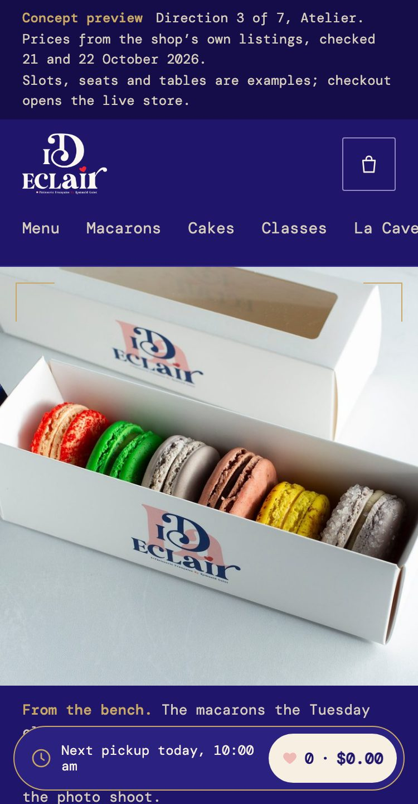
Direction 03
Atelier
Atelier treats the logo’s indigo as the room the chef works in: ivory type, a gold hairline around each choice, and the chef at the bench with his record set out as plain credits, from La Maison de Marc Veyrat and La Mirabelle to the Spring Baking Championship final and the fourth generation. The page runs like a documentary, with a film strip of five buyable techniques captioned in French, while a quiet dock keeps the next pickup slot and the bag on screen and hands off to Shopify.
Does best
- The chef opens the page, at the bench, with his credits set out beneath him.
- Technique as product: pocher, caraméliser, monter, macaronner, enrober, each one buyable.
- The indigo ground doubles as the evening base for La Cave.
- Gate
- PASS 11/11
- Taps
- 6, or 8 with your own slot
- Phone page
- 22,500 px
-
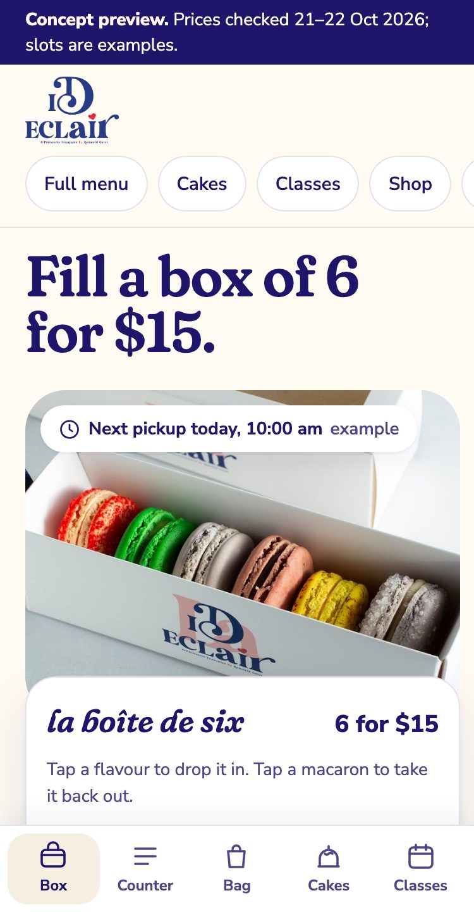
Direction 04
Marché
Marché opens with the box of six as the first act: the real white box photo sits under a live builder where each tapped flavour drops into its well, on bright ivory with soft round cards and the red heart kept for one meaning, “this is in your bag”. Below it, a counter rail gives 18 menu items a voice line that changes when you pick them, and every other mechanic, from pickup slots and dated class seats to La Cave’s Reserve a table and the merch launch set, sits one thumb-tap from the morning line.
Does best
- The $15 box of six is on the first phone screen.
- The shortest phone page of the first seven.
- The red heart means one thing: it’s in your bag.
- Gate
- PASS 11/11
- Taps
- 6, or 8 with your own slot
- Phone page
- 16,900 px
-
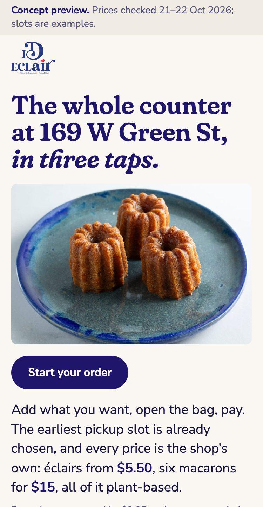
Direction 05
Carte
Carte makes the whole counter the home page: the real menu set as a printed French carte, éclairs first, with the earliest pickup slot already chosen and a sticky strip of Slot, Add and Pay that fills in as you order. It is built for the 10 am line and the lunch rush, with favourites, one-tap reorder kept on the device and a set for each time of day that adds two items at counter prices.
Does best
- The first Add button sits about one phone screen down, nearer than on any other option.
- Search and section tabs over the whole counter.
- Regulars: favourites, usuals and one-tap reorder.
- Gate
- PASS 11/11
- Taps
- 6, or 10 with your own slot
- Phone page
- 17,300 px
-
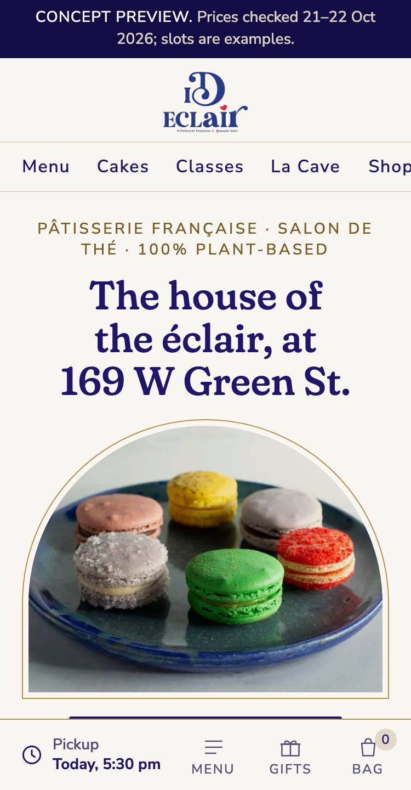
Direction 06
Maison
Maison presents iD Éclair the way the great Paris houses present themselves: one symmetrical axis on warm ivory, every piece in a gold-hairline écrin or arched vitrine niche, and four numbered collections (Les Classiques, Les Jarres, Les Cadeaux, La Cave). It sells by leading with gifts, with the $140 Golden Ticket set off the axis and the coffrets, a gift card with a note preview and a concierge form for events and offices behind it.
Does best
- Gifting first: the Golden Ticket, the coffrets, a gift card with a note preview.
- A presentation that matches the three-Michelin-star training.
- A concierge form for events and office orders.
- Gate
- PASS 11/11
- Taps
- 6, or 8 with your own slot
- Phone page
- 29,500 px, the longest
-
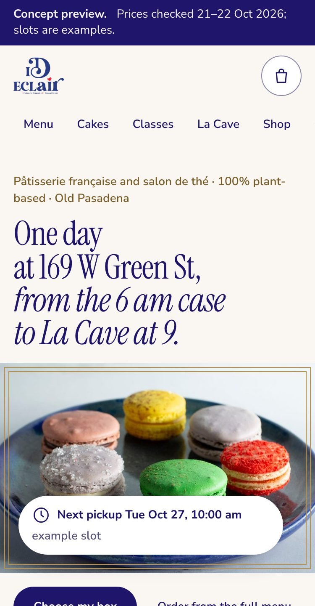
Direction 07
Frontier
Frontier tells the home page as one day at 169 W Green St in eight chapters you scroll like a clock, from the 6 am vitrine to La Cave at 9, with a sticky chapter bar and a progress line. Under every chapter sits a working buying tool on local rules, from a three-question concierge that builds a box to an afternoon-tea planner and cake pickup dates counted from today, all feeding the one shared bag, so the most ambitious option is also the one with the most ways to buy.
Does best
- A three-question concierge that builds a box, a tea at home or a gift.
- An afternoon-tea planner by guests, day and sitting.
- The most ways to buy of the seven, all in one bag.
- Gate
- PASS 11/11
- Taps
- 6, or 8 with your own slot
- Phone page
- 24,800 px
-
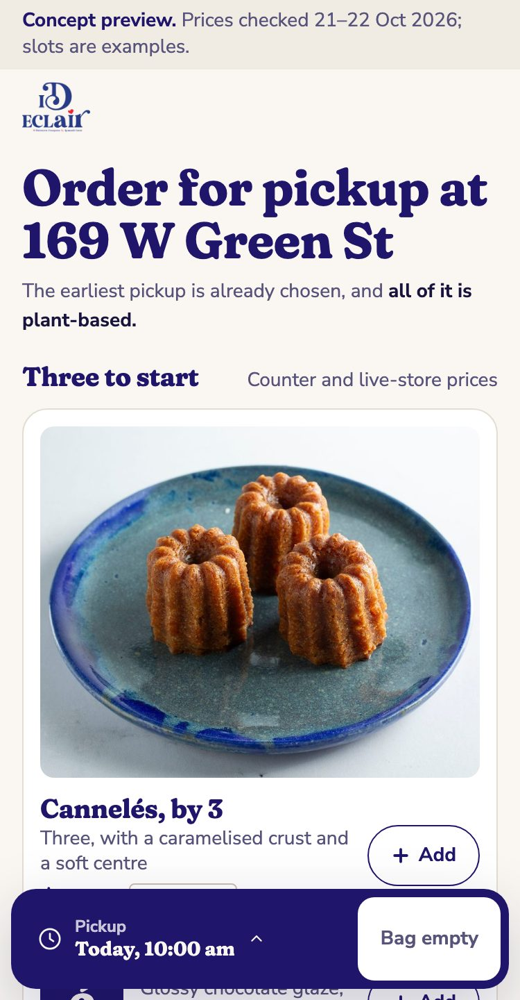
Direction 08
Comptoir
Comptoir is the conversion-first direction: the first phone screen is the order, not a story. Three to start sit at their real prices with Add (the chocolate éclair, the shop’s top seller on Grubhub, the butter croissant and the cannelés), then the pickup slot already chosen, the box of six and three one-tap sets by the hour, with the other 41 counter items below. A dock under the thumb holds the slot sheet and Pay, which goes straight to the Shopify cart when the bag is all live-store items.
Does best
- The shortest reach of the ten: the box and the slot picker sit within 1.5 phone screens.
- Pay under the thumb: a live-store bag reaches Shopify in 3 taps, a two-item set in 1.
- Gift card, class seat and Golden Ticket as cards; the club is one email field.
- Gate
- PASS 11/11
- Taps
- 6, or 8 with your own slot
- Phone page
- 11,000 px
-
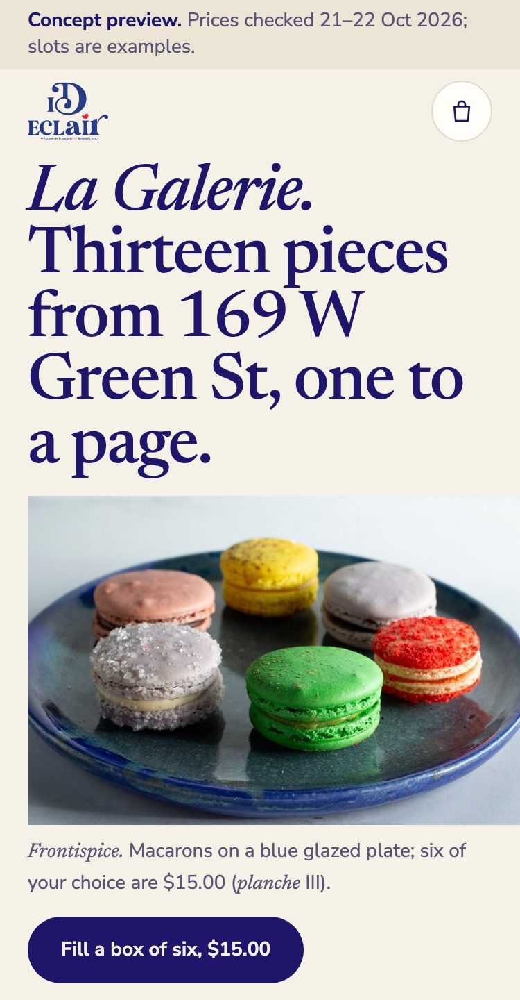
Direction 09
Galerie
Galerie is the editorial direction: the case set as a museum catalogue, one piece to a phone screen. Each numbered planche shows the shop’s own photograph in a mat, or the French name as a typographic plate where no photo exists yet, with its price and Add, and ivory plates alternate with the logo’s indigo. The strip of mechanics (pickup, bag, Pay) stays out of sight until the bag holds something, and a closing plate, Le retrait, keeps the slot picker and checkout reachable.
Does best
- The shop’s product photography at full size: cannelés, the macaron box, truffles, the jars.
- French names set large, from Cannelés to Le plateau de La Cave.
- A quiet page that still sells: every plate has its Add, and the strip rises with the first one.
- Gate
- PASS 11/11
- Taps
- 6, or 9 with your own slot
- Phone page
- 16,600 px
-
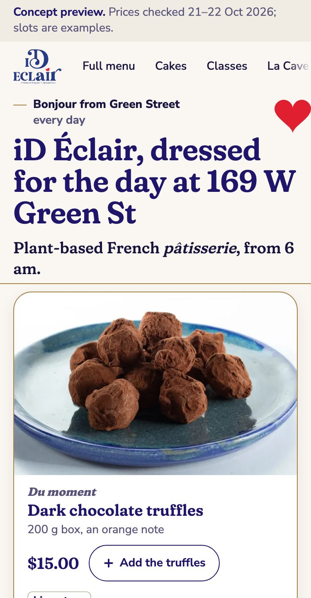
Direction 10
Fête
Fête is the seasonal direction, built as a skin system: one page, one markup and one checkout, dressed by CSS variables under a data-skin attribute. A calendar holds 25 skins through 2027, from Halloween (a black cat, pumpkin orange in the heart’s place, ghost-shaped macaron cards, cobweb hairlines) and the Rose Parade to Bastille Day and the rentrée, and each motif is one of the shop’s own cookie-cutter outlines. The toggle in the notice bar or ?skin= previews any of them; on the live store one theme setting switches the look and Auto reverts it by date.
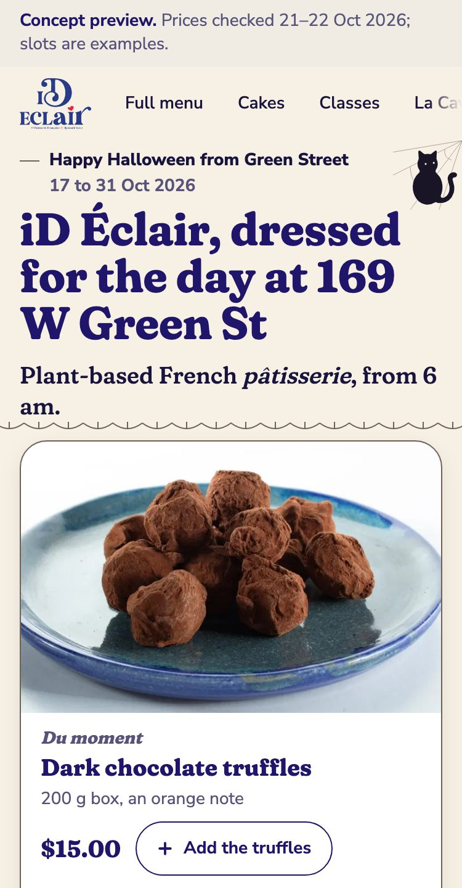
The same screen on Halloween: markup, prices and Pay unchanged.Does best
- A new look for every season and Pasadena day with no new page: 25 skins in one calendar file.
- Motifs that match the cookie-cutter merch line.
- The same bag and Shopify hand-off in every skin, checked in the browser in two of them.
- Gate
- PASS 11/11
- Taps
- 6, or 8 with your own slot
- Phone page
- 13,000 px
- Skins
- 25
-
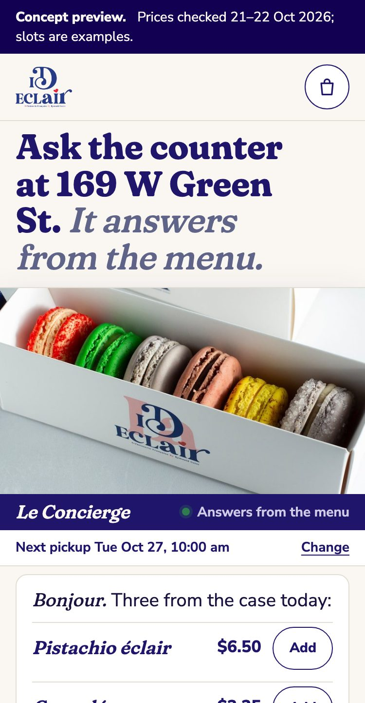
Direction 11
Concierge
Concierge makes the technology the design: the first screen is a conversation with the counter, which answers in the shop’s voice from menu.json and a 29-fact file, prints the file and row under every reply, and says “I do not know that yet, the shop can tell you” rather than guess. It adds to the bag, opens the slot picker, fills the box of six from a sentence, and sits beside a cake composer that draws the cake and prices it from an example rule, a four-tap Trouve-moi, a gift concierge with the note previewed, and the usual kept on the phone only. A How this works section says what runs in the browser today and what a tested Cloudflare Worker adds on the live store: the same rules first, a model only for the gaps, every reply checked against the rows.
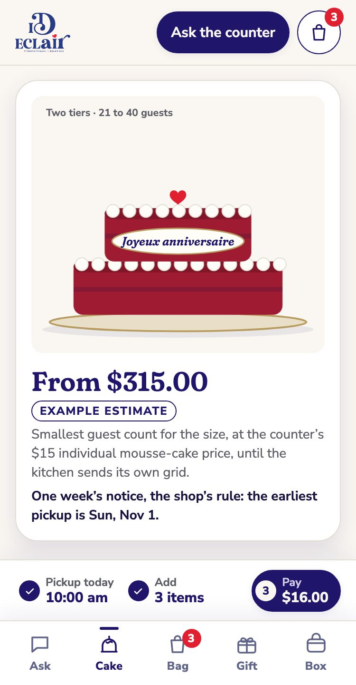
The composer: tiers, flavour, finish and plaque, drawn live, saved as a request at $0.Does best
- Answers questions in plain words, prices and gluten marks included, and shows its source every time.
- Turns a sentence into an action: “3 pistachio and 3 raspberry” fills the box.
- A production path written and tested: 27 worker tests, rules first, nothing logged but counts.
- Gate
- PASS 11/11
- Taps
- 6, or 9 with your own slot
- Phone page
- 14,200 px
- Worker tests
- 27 pass
Side by side
Measured in a headless phone browser at 375 px on 22 October 2026. Taps follow the path in “How to compare”; screens are how far down the page the farthest of the first item, the box and the slot picker sits, in 812 px phone screens.
| Direction | Taps, earliest slot | Taps, your own slot | Screens to reach box and slot | Best for |
|---|---|---|---|---|
| 01 Vitrine | 6 | 8 | 7.2 | Showing the whole range at once, for customers who browse |
| 02 Salon | 6 | 8 | 8.2 | First visits and afternoon tea |
| 03 Atelier | 6 | 8 | 6.7 | The chef’s pedigree, press and the evening tone |
| 04 Marché | 6 | 8 | 4.4 | Morning phone orders and the macaron box |
| 05 Carte | 6 | 10 | 4.2 | Regulars and the lunch rush |
| 06 Maison | 6 | 8 | 6.1 | Gifts, holidays and office orders |
| 07 Frontier | 6 | 8 | 9.5 | Guided shoppers who want help choosing |
| 08 Comptoir | 6 | 8 | 1.5 | Regulars, the morning line and repeat orders |
| 09 Galerie | 6 | 9 | 5.6 | First impressions, gifts and the shop’s photography |
| 10 Fête | 6 | 8 | 3.0 | Seasons, holidays and Pasadena event days |
| 11 Concierge | 6 | 9 | 2.9 | Customers with a question first: diet, notice, a cake or a gift |